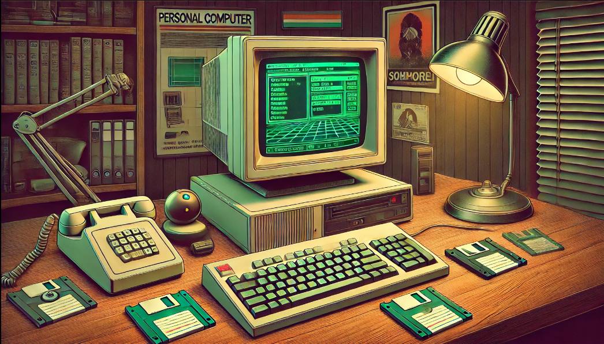

Un Sistema operativo es un programa que administra el hardware de una computadora. También proporciona las bases para los programas de aplicación, y actúa como intermediario entre el usuario y el hardware, estas tareas, pueden ser llevadas a cabo de varias formas, lo que permite que algunos sistemas Operativos se diseñen para ser prácticos, otros eficientes y otros para ser ambas cosas, dado que un sistema operativo es un software grande y complejo, debe crearse pieza por pieza. En este curso veremos, entre otras cosas, una introducción a los principal definición de un sistema operativo y su evolución.
Introducción a los Sistemas Operativos. (2025).
¿Qué hace un sistema Operativo?
Un sistema informático puede dividirse en cuatro componentes: el hardware, el sistema Operativo, los programas de aplicación, y los usuarios. El Sistema operativo controla y coordina el uso del hardware entre los diversos programas de aplicación por parte de los distintos usuarios. También podemos ver un sistema informático como hardware, software y datos, pues proporciona los medios para hacer un uso adecuado de estos recursos durante el funcionamiento del sistema informático.
4. Evolución histórica de los Sistemas Operativos:
SISTEMAS BATCH Ó POR LOTES (70’ y comienzos de los 80’):
En las primeras épocas los sistemas eran grandes y costosos, constaban de una entrada de trabajos y una salida impresa, por lo cual la interacción con el usuario era prácticamente nula, las principales características eran que el sistema soportaba de un único trabajo a la vez, y que las tareas relacionadas se agrupaban en conjuntos o lotes, para su procesamiento más eficiente. A comienzos de los 80’, utilizando las técnicas de Spooling (proceso mediante el cual la computadora introduce trabajos en un buffer, de manera que un dispositivo pueda acceder a ellos cuando esté listo) y multiprogramación (ejecución de múltiples tareas compartiendo recursos) se pudo comenzar a desarrollar técnicas de planificación de despacho. Esta técnica consistía en seleccionar un lote de trabajos que estaban en memoria secundaria para cargarlos en memoria principal. Luego, el SO seleccionaba uno de ellos para ejecutar, y si este debía esperar por alguna tarea (por ejemplo, ejecución de E/S) el sistema elegía otro del lote para utilizar el procesador.
Estos sistemas eran capaces de soportar múltiples usuarios al mismo tiempo y ejecutaban programas de manera simultánea, con una alta frecuencia de cambios entre tareas. Esto permitía que cada usuario interactuara con el sistema como si fuera el único. La necesidad de acceder y actualizar datos de manera concurrente llevó a la evolución del sistema de archivos hacia uno que soportara múltiples usuarios, incorporando técnicas para proteger los accesos.
Con costos de hardware decrecientes, fue posible el diseño y uso de computadores personales, los Sistemas fueron diseñados en base a que serían utilizados por un único usuario, y todo el énfasis en el desarrollo estuvo en mejorar la interacción con el usuario, se desarrolló la interfaz de ventanas que conocemos hoy.

SISTEMAS PARALELOS (comienzos 90’) :
Son Sistemas donde se dispone de más de un procesador, permitiendo ejecución simultánea y sincronizada de procesos, se clasifican en:
• Altamente integrados: “tightly coupled”. Son sistemas en donde los canales de interconexión son de alta velocidad. (bus común o memoria compartida).
• Poco Integrados: “closely coupled”. Son sistemas en donde los canales de interconexión son de baja velocidad (sistemas en red).
Un sistema de tiempo real es un sistema informático que interactúa con su entorno físico y responde a los estímulos de este dentro de un tiempo específico. No solo es necesario que las acciones del sistema sean correctas, sino que también deben realizarse dentro de un intervalo de tiempo establecido, existen sistemas de tiempo real crítico (tiempo real duro), donde es imperativo cumplir con los plazos de respuesta de manera estricta, ya que un solo retraso en la reacción a un evento externo puede tener consecuencias graves; y sistemas de tiempo real acrítico (tiempo real suave), donde se permiten algunos retrasos en la respuesta a un evento.
Un ejemplo que ilustra estos conceptos es el de un robot que debe recoger una pieza de una cinta transportadora. Si el robot llega tarde, la pieza ya no estará en el lugar donde debía recogerla, lo que significa que la tarea se realizó incorrectamente, aunque el robot haya llegado al sitio correcto. Por otro lado, si el robot llega antes de que la pieza esté disponible, esta aún no estará allí y el robot podría obstruir el paso.